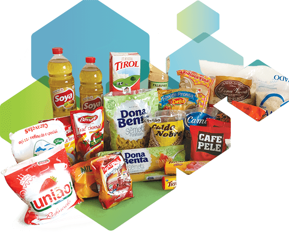

"Durante a pandemia da Covid-19 muitos brasileiros perderam seus empregos por
conta da crise que se agravou no país fazendo com que muitas pessoas
ficassem em situações financeiras críticas. Sol Silva moradora do Parque Santa Madalena (Zona Leste - SP) criou o
Núcleo Social Entre Mãos, uma OSC (Organização da Sociedade Civil) que distribui
cestas básicas e gás de cozinha para famílias de baixa renda que se
encontram em situação de desemprego, dívidas, e de vulnerabilidade. A idéia
do Núcleo iniciou-se em 2020 quando ela ainda trabalhava em outra ONG e percebeu que muitas famílias estavam precisando de ajuda, ela juntamente com
alguns amigos começaram aos poucos distribuindo cestas básicas para famílias
da comunidade, e atualmente ela montou o seu próprio Núcleo dentro da própria casa
que atende mais de 70 famílias fornecendo cestas básicas mensalmente e o gás
de cozinha para moradores do bairro e regiões próximas. Através desse
projeto Sol conheceu a fundo realidades de famílias na qual ela nem
imaginava e começou a dar mais valor pelo o que ela tinha. Um projeto
filantrópico fundado por uma equipe que deseja ajudar pessoas — fazendo o
possível para que essas famílias possam se reerguer em tempos difíceis,
fornecendo ajuda durante seis meses e estendendo esse prazo se necessário
com ajuda de amigos parceiros do projeto. O Núcleo Entre mãos possui esse
nome por um motivo: “É o passar de mãos da arrecadação , uma pessoa ajudando
a outra criando uma rede, alguém indica uma família, passa para mim e para a
equipe que trabalha comigo e eles doam a cesta básica e o gás de cozinha
para a família e através dessa família outras famílias ficam sabendo do
Núcleo e mais pessoas podem ser ajudadas” explicou Sol."


Para ser uma família cadastrada no projeto basta responder o pré formulário abaixo onde será analisado: a situação financeira da família,quantidade de membros, dados pessoais entre outras informações. E caso
queira ajudar de alguma forma o projeto o núcleo aceita doações de alimentos, cestas básicas e indicações de famílias que estão precisando de ajuda.